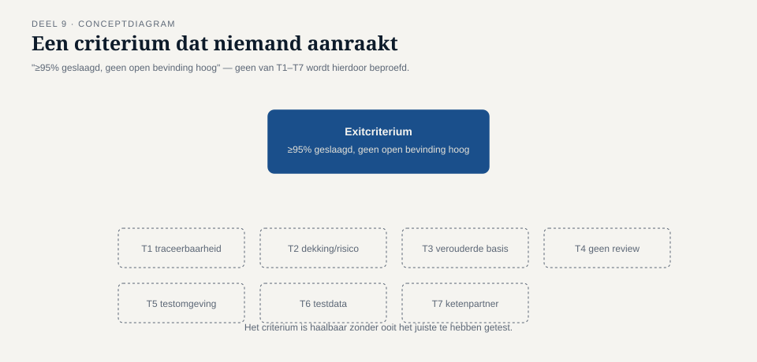
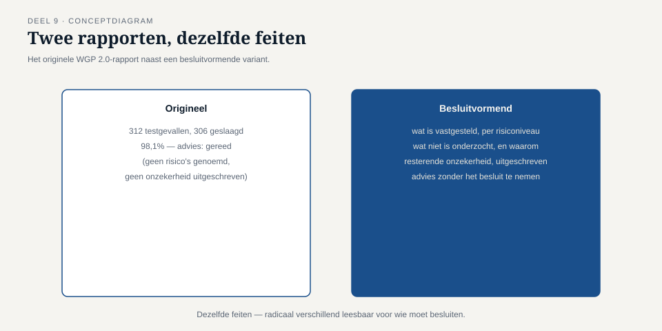
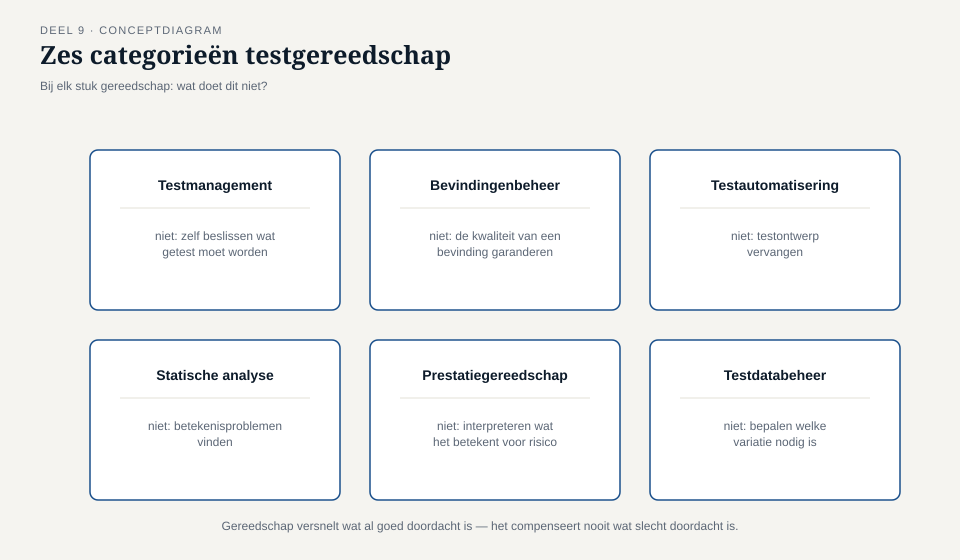
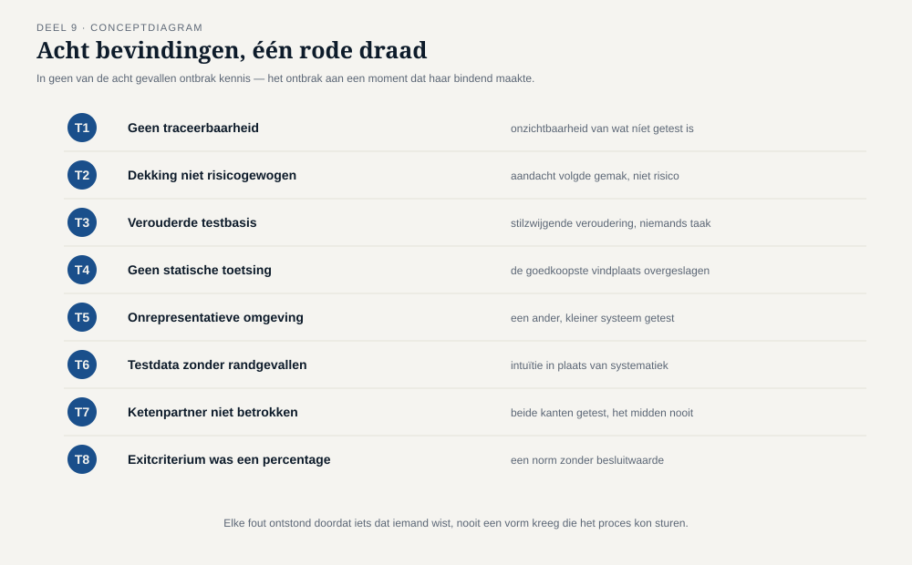

Deel 9 — Rapporteren en gereedschap
Reader · Ductus-cursus Testen en Kwaliteitsborging · niveau 1 (fundament) · deel 9 van 30
Dit deel sluit de laatste bevinding van niveau 1: T8 — het exitcriterium van WGP 2.0 was "minimaal 95% geslaagd en geen open bevinding met prioriteit hoog", een norm die gehaald kan worden zonder dat iemand een besluit neemt.
Leerdoelen
Na dit deel kun je:
- uitleggen wat metrics wel en niet over kwaliteit zeggen, en het begrip perverse prikkel toepassen op een testmetric;
- een testrapport opstellen dat een besluit dient in plaats van een kleur toont;
- het onderscheid tussen voortgangsrapportage en eindrapportage toepassen;
- entry- en exitcriteria formuleren die een organisatie daadwerkelijk kunnen tegenhouden;
- het verschil tussen een exitcriterium en een definition of done beargumenteren;
- de hoofdcategorieën testgereedschap benoemen en hun beloften tegenover hun beperkingen afwegen;
- reflecteren op wat er in de hele reeks T1–T8 gemeenschappelijk is.
Studielast: één dagdeel klassikaal, circa drie uur zelfstudie.
1. Een norm die precies werd gehaald
Het exitcriterium van WGP 2.0 stond in de testaanpak, ondertekend, vier maanden vóór de livegang: "Minimaal 95% geslaagd en geen open bevinding met prioriteit hoog."
Op de dag van het advies "gereed voor productie" was dat criterium, tot op de letter, gehaald: 98,1% geslaagd, alle zes openstaande bevindingen op prioriteit laag. Niemand overtrad de afspraak. Niemand hoefde te liegen, te marchanderen of het criterium op te rekken. Het systeem voldeed eraan, zoals afgesproken.
En toch beschrijft dat criterium niets van wat er werkelijk toe deed: niet welke risico's waren afgedekt (T2), niet of de testbasis nog actueel was (T3), niet of de keten was getest (T7), niet of de testomgeving representatief was (T5). Een cijfer en een kleur, verder niets.

Kernzin — Een exitcriterium dat je kunt halen zonder de juiste dingen te hebben getest, is geen kwaliteitscriterium. Het is een resultaatgarantie voor het criterium zelf.
Dit is bevinding T8, de laatste van niveau 1, en in zekere zin de bevinding die alle andere mogelijk maakte: T1 tot en met T7 konden onopgemerkt blijven omdat het criterium dat had moeten opmerken, er niet naar vroeg.
2. Metrics en de perverse prikkel
2.1 Wat een metric wel en niet meet
Een metric is een meting die iets zichtbaar probeert te maken: aantal testgevallen, dekkingspercentage, aantal openstaande bevindingen, doorlooptijd. Elke metric meet iets specifieks en precies dat — nooit "kwaliteit" in het algemeen, wat geen enkel getal in zijn geheel kan vangen.
2.2 Perverse prikkels
Een perverse prikkel ontstaat wanneer een metric een doel op zich wordt, in plaats van een signaal over iets anders. Zodra mensen weten dat zij op een getal worden beoordeeld, gaan zij — vaak zonder kwade wil — dat getal optimaliseren, soms ten koste van wat het getal oorspronkelijk moest weerspiegelen.
Concrete voorbeelden, waarvan er minstens twee zich bij WGP 2.0 daadwerkelijk voordeden:
- "Aantal testgevallen" als doel → veel korte, makkelijke testgevallen toevoegen (inloggen, navigeren) verhoogt het aantal zonder het risico te verkleinen. Vergelijk met de 180 tegen 4 uit deel 7.
- "Percentage geslaagd" als doel → alleen testgevallen schrijven waarvan je vooraf al zeker weet dat ze slagen, of een lastig testgeval stilletjes schrappen in plaats van oplossen. Vergelijk met de zes "niet uitgevoerd" gevallen die geen "gefaald" werden.
- "Aantal openstaande bevindingen" als doel → bevindingen afsluiten zonder ze werkelijk op te lossen, of de prioriteit kunstmatig laag houden zodat zij niet meetellen in de rapportage.
- "Dekkingspercentage" als doel (deel 6) → code aanraken zonder gericht te testen, precies het
catch-blok-voorbeeld.

2.3 Metrics blijven nuttig, mits gecombineerd en geïnterpreteerd
De les is niet "meet niets", maar: gebruik nooit één metric geïsoleerd, en vraag altijd wat een metric níet laat zien. Een dekkingspercentage naast een risico-inschatting (deel 7) vertelt meer dan het percentage alleen. Een aantal openstaande bevindingen naast hun ernstverdeling (deel 8) vertelt meer dan het aantal alleen.
3. Een testrapport dat een besluit dient
3.1 Terug naar deel 1
In deel 1 herschreef je de conclusie van het WGP 2.0-rapport (opdracht 1.6). Dit hoofdstuk maakt expliciet wat daar impliciet werd geoefend: een testrapport is geen verslag van activiteiten maar een instrument voor een besluit.
3.2 Vaste onderdelen van een besluitvormend rapport
- Wat is vastgesteld — feitelijk, met verwijzing naar de testbasis (deel 2) en het risiconiveau (deel 7) van elk onderdeel.
- Wat niet is onderzocht, en waarom — een bewuste keuze (deel 7, laag risico) ziet er anders uit dan een gedwongen keuze (tijdsdruk) en dat verschil hoort zichtbaar te zijn.
- De resterende onzekerheid, uitgeschreven in plaats van verstopt in een percentage.
- Een aanbeveling zonder het besluit te nemen — de rolgrens uit deel 1, hier op zijn scherpst: de tester mag zeggen "gegeven wat we weten, adviseren wij X", maar het besluit blijft aan de eigenaar van het risico.

3.3 Voortgangsrapportage versus eindrapportage
Voortgangsrapportage gebeurt doorlopend (testmonitoring, deel 2): waar staan we ten opzichte van het plan, en is bijsturing nodig? Het publiek is meestal het team en de direct opdrachtgever.
Eindrapportage (testafsluiting, deel 2) vat het geheel samen op het besluitmoment. Beide delen dezelfde principes uit §3.2, maar de eindrapportage draagt een zwaarder gewicht: zij is het document waarop het livegaan-besluit wordt gebaseerd, en dus het document dat T8 rechtstreeks aanspreekt.
4. Entry- en exitcriteria
4.1 Entrycriteria
Voorwaarden die vervuld moeten zijn vóórdat een testfase zinvol kan starten: is de testbasis beschikbaar en van voldoende kwaliteit (deel 2 en 4)? Is de testomgeving representatief (deel 8)? Is de testdata beschikbaar (deel 8)? Ontbrekende entrycriteria zijn de reden dat WGP 2.0's acceptatietest startte terwijl zes testgevallen — precies de terugwerkende-krachtgevallen — geen bruikbare testdata hadden. Een entrycriterium "testdata voor alle geplande testgevallen is beschikbaar" had de start van de test zelf tegengehouden totdat dat probleem was opgelost, in plaats van het als voetnoot in het eindrapport te laten staan.
4.2 Exitcriteria die stand kunnen houden
Bouwt direct voort op deel 7 (risicogebaseerde exitcriteria). De aanvulling hier: een exitcriterium moet niet alleen inhoudelijk juist zijn, maar ook daadwerkelijk kunnen tegenhouden. Een criterium dat niemand ooit heeft zien leiden tot "nee, nog niet klaar" is verdacht — niet omdat het systeem toevallig altijd goed genoeg was, maar omdat een criterium dat nooit "nee" zegt, waarschijnlijk nooit heeft getoetst wat ertoe deed.
Kernzin — Een exitcriterium dat nog nooit een livegang heeft tegengehouden, heeft waarschijnlijk nog nooit het juiste getoetst.
4.3 Exitcriterium versus definition of done
In agile werkwijzen bestaat vaak al een definition of done: een gedeelde afspraak wanneer een stuk werk als voltooid geldt. Het exitcriterium uit de testwereld en de definition of done overlappen sterk in bedoeling, maar niet altijd in scherpte: een definition of done is vaak generiek geformuleerd voor alle werk ("code gereviewd, tests geslaagd, gedocumenteerd") en mist daardoor precies de risicogebaseerde verbijzondering die T2 en T8 nodig hadden. De remedie is niet een tweede, concurrerend document, maar het risicogebaseerde denken uit deel 7 in de bestaande definition of done te verwerken. ↗ scrumcursus behandelt de definition of done zelf.
5. Testgereedschap
5.1 Categorieën
| Categorie | Wat het doet | Wat het niet doet |
|---|---|---|
| Testmanagementtools | testgevallen, planning, traceerbaarheid vastleggen (deel 2) | zelf beslissen wat getest moet worden |
| Bevindingenbeheer | bevindingen vastleggen, workflow bewaken (deel 8) | de kwaliteit van een bevinding garanderen |
| Testautomatiseringstools | uitvoering van vooraf ontworpen tests versnellen | testontwerp vervangen (deel 5 en 6) |
| Statische-analysetools | structurele patronen in code of modellen signaleren (deel 4) | betekenisproblemen vinden |
| Prestatietestgereedschap | belasting simuleren en meten | interpreteren wat een uitkomst betekent voor het risico |
| Testdatabeheertools | data genereren, maskeren, beheren (deel 8) | bepalen welke variatie nodig is |

5.2 De belofte en de valkuil
Elk stuk gereedschap wordt verkocht met de belofte dat het iets van het denkwerk overneemt. Voor niveau 1 is de belangrijkste vuistregel: gereedschap versnelt en systematiseert een activiteit die al goed doordacht is; het compenseert nooit een activiteit die slecht doordacht is. Een testmanagementtool met traceerbaarheidsfunctie lost T1 niet op als niemand de discipline heeft om de verwijzing daadwerkelijk in te vullen. Een dekkingstool lost het catch-blok-probleem uit deel 6 niet op zolang niemand vraagt wat er precies mee getest werd.
Toolkeuze zelf is toolneutraal in deze cursus (zie de aparte Toolbijlagen); dit hoofdstuk gaat over wat gereedschap in het algemeen kan en niet kan, niet over specifieke producten.
6. Terugblik: wat T1–T8 gemeen hebben
Nu alle acht bevindingen zijn behandeld, is het moment om ze naast elkaar te leggen.
| # | Bevinding | Kern van de fout |
|---|---|---|
| T1 | Geen traceerbaarheid | Onzichtbaarheid van wat níet getest is |
| T2 | Dekking niet risicogewogen | Aandacht volgde gemak, niet risico |
| T3 | Verouderde testbasis | Stilzwijgende veroudering, niemands taak |
| T4 | Geen statische toetsing | De goedkoopste vindplaats werd overgeslagen |
| T5 | Onrepresentatieve testomgeving | Een ander, kleiner systeem werd getest |
| T6 | Testdata zonder randgevallen | Intuïtieve keuzes in plaats van systematiek |
| T7 | Ketenpartner niet betrokken | Beide kanten getest, het midden nooit |
| T8 | Exitcriterium was een percentage | Een norm zonder besluitwaarde |

Kernzin — Geen van deze acht fouten ontstond uit onkunde. Elke fout ontstond doordat iets dat iemand wist, nooit een vorm kreeg die het testproces kon sturen.
Dit inzicht is de kern waarmee je deel 10, de capstone, ingaat.
7. TMAP-lens
Hoe heet dit daar. Rapportage in TMAP is sterk gekoppeld aan het VOICE-model (deel 1, 7): niet "wat hebben we getest" maar "wat zegt dit over de nagestreefde waarde, en welk vertrouwen geeft dat". Gereedschap wordt in TMAP nadrukkelijk als teambreed instrumentarium gepositioneerd — dashboards die het hele team, niet alleen de tester, inzicht geven.
Waar het werkelijk anders is. TMAP is expliciet terughoudend met één enkele "kwaliteitsscore" of stoplichtkleur, precies vanwege het risico op perverse prikkels dat dit hoofdstuk beschrijft. In plaats daarvan werkt TMAP vaak met een set indicatoren die gezamenlijk worden gelezen — geen enkele metric mag in zijn eentje een besluit dragen. Dat is inhoudelijk vrijwel identiek aan de kernboodschap van dit hoofdstuk, alleen sterker verankerd in de aanpak zelf dan in de klassieke ISTQB-opbouw, waar het als afzonderlijk waarschuwingspunt wordt behandeld.
8. Examenaansluiting
Dit deel dekt CTFL v4.0, hoofdstuk 5 (deel rapportage) en sluit hoofdstuk 1 opnieuw af (metrics, in samenhang met de zeven testprincipes uit deel 1): testrapportage, metrics, entry- en exitcriteria, en — beperkt, als oriëntatie — categorieën testgereedschap (hoofdstuk 6 van de syllabus, hier niet uitputtend behandeld). Overwegend K2.
Veelgemaakte examenfouten:
- Entry- en exitcriteria verwisselen. Vuistregel: entry = mag de fase beginnen, exit = mag de fase eindigen.
- Denken dat een hoog percentage automatisch goed nieuws is — herhaling van de valkuil uit deel 1, hier toegepast op rapportageniveau.
- Gereedschap zien als vervanging van testontwerp in plaats van als versnelling ervan.
Deze cursus bereidt voor op het examen en vervangt het officiële examenmateriaal niet.
9. Kruisverwijzingen
- ↗ Scrum: definition of done en de relatie met risicogebaseerde exitcriteria.
- ↗ SAFe: rapportage op programmaniveau, deploy-vs-release als vergelijkbaar besluitvormend concept.
- ↗ Project- en programmamanagement: voortgangsrapportage naar een stuurgroep, met dezelfde valkuil van kleuren zonder informatie.
Kernbegrippen
metric · perverse prikkel · besluitvormend testrapport · voortgangs- versus eindrapportage · entrycriterium · exitcriterium · definition of done · testgereedschapscategorieën (management, bevindingen, automatisering, statische analyse, prestatie, testdata)
Samenvatting in vijf zinnen
- Een exitcriterium dat gehaald kan worden zonder de juiste dingen te hebben getest, is geen kwaliteitscriterium maar een resultaatgarantie voor zichzelf.
- Een metric die tot doel op zich wordt in plaats van signaal, ontlokt een perverse prikkel — het optimaliseren van het getal in plaats van waar het getal voor stond.
- Een besluitvormend testrapport beschrijft wat is vastgesteld, wat niet is onderzocht en waarom, en de resterende onzekerheid — zonder het besluit zelf te nemen.
- Een exitcriterium dat nog nooit een livegang heeft tegengehouden, heeft waarschijnlijk nog nooit het juiste getoetst.
- Geen van de acht bevindingen T1–T8 ontstond uit onkunde; elke fout ontstond doordat kennis die er al was, nooit een vorm kreeg die het testproces kon sturen.